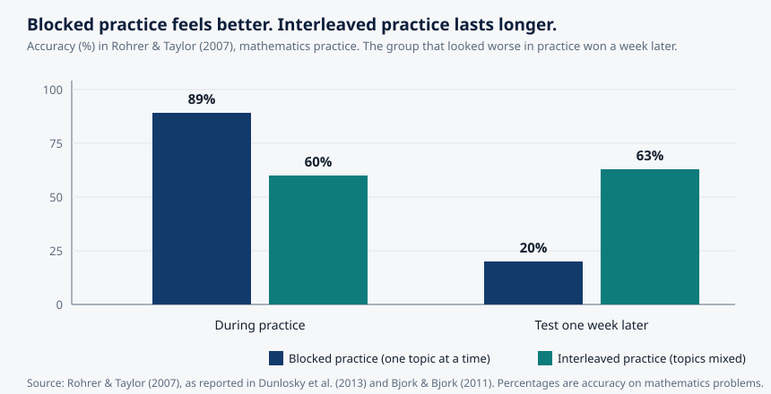

Article 50 · Cognition.X · AGI Future Foundation
How Skills Actually Form: The Science of Learning
The first article in this series introduced Cognition.X — a proposed learning series, its Flow Zone direction, and its anchored campus at 45.483, 18.572.
Cognition.X · Intelligence & Mind · AGI Future Foundation
Illustration (generated image): skill growing stone by stone. Not a photograph, not a picture of a real place or person, and not a screenshot of any system.
What is true, and what is not yet true
The first article in this series introduced Cognition.X — a proposed learning series, its Flow Zone direction, and its anchored campus at 45.483, 18.572. The second examined metacognition, the mind’s ability to watch itself. This article is about the ground beneath both of them: the science of how skills actually form. What does a century of cognitive research say about how people learn, remember, and get good at things — and what does it say about the ways people usually try to learn, which mostly do not work?
Here is what is true. The science in this article is real and heavily replicated. The spacing effect was first measured in the 1880s. The limits of working memory were established in the 1950s. The techniques rated most effective in the largest review of the field were confirmed across hundreds of studies. Every source cited at the end is a real paper, book, or page that was actually read while writing this article.
Here is what is not yet true. Cognition.X has no verified team, curriculum, learner, or product. The research below is the reason the series is worth attempting, not evidence that the attempt has succeeded. The last section says what would have to exist before the series could honestly claim to teach anyone anything.
There is a second honesty to observe, and it runs through the whole article. The science of learning is, to an unusual degree, a science of disappointment: the methods people like best are the ones that work worst, the feeling of learning is a poor guide to learning, and the most effective practice feels like failure.
1. The bottleneck: a mind that can hold almost nothing
Every serious account of learning starts in the same place: with a bottleneck so narrow it is hard to believe. Working memory — the mental space where conscious thinking happens — can hold only a handful of new items at once, and it loses them within seconds unless they are actively maintained.
The first measurement of the bottleneck is one of the most famous papers in psychology. In 1956, George Miller published “The Magical Number Seven, Plus or Minus Two”, reporting that people can hold about seven items in short-term memory at once. The number became famous, and it was wrong in an interesting way: later work showed that seven was only achievable because people were using tricks — grouping items into chunks, rehearsing them silently, leaning on long-term knowledge. When Nelson Cowan revisited the question in 2001 in a paper deliberately titled “The Magical Number 4 in Short-Term Memory”, he presented extensive evidence that the true capacity, when chunking and rehearsal are controlled for, is closer to four items. Four chunks. Not seven facts, not seven ideas — four.
The capacity is only half the problem. The other half is time. Unrehearsed items decay from working memory in roughly twenty to thirty seconds. The mind is, in this respect, like a whiteboard the size of a postcard that erases itself. Everything that learning is — every skill, every body of knowledge, every fluent performance — has to be built through that postcard, a few items at a time, before it can be stored somewhere that does not erase.
That somewhere is long-term memory, and the contrast between the two stores is the central fact of the science of learning. Working memory is tiny and brief. Long-term memory is, for practical purposes, unlimited in capacity and duration. Learning, in the strict sense, is the transfer of information from the first store to the second — and the transfer is the hard part, because the bottleneck stands in the way of every attempt.
John Sweller built the most useful theory of that bottleneck. In 1988, studying how students solved mathematics problems, Sweller proposed cognitive load theory: the claim that learning fails when the total demand on working memory exceeds what the learner can carry. He distinguished three kinds of load. Intrinsic load is the built-in difficulty of the material itself. It cannot be eliminated, only sequenced: a beginner must meet the elements one at a time, an expert can meet them together, because the expert has already stored them as a single chunk. Extraneous load is wasted effort created by poor presentation — split attention, redundant explanation, decorative detail. It can and should be eliminated. Germane load is the productive effort of building knowledge structures — the schemas that let an expert treat ten interacting elements as one. The design rule is simple to state and hard to follow: eliminate extraneous load, manage intrinsic load by sequencing, and protect room for germane load.
Cognitive load theory also explains a paradox every teacher has seen: beginners learn more from studying a worked solution than from solving the same problem themselves. Unguided problem-solving forces a beginner to hold the goal, the current state, the operators, and the search strategy in working memory all at once — a load that leaves no room for learning. A worked example removes the search and lets the learner attend to the structure of the solution. As expertise grows, the advantage reverses: experts learn more from solving than from studying examples, because for them the solution steps are already chunked. The same instruction helps the beginner and bores the expert, and a system that cannot tell the difference will mistreat both.
2. Forgetting is the default
If the bottleneck is the first fact of learning, the second is more unsettling: forgetting is not a failure of memory. It is what memory does by default.
Hermann Ebbinghaus demonstrated this in 1885, in one of the first experimental studies of memory ever conducted. Working alone, memorising lists of nonsense syllables, he measured how much he retained after different delays, and the curve he drew has been replicated ever since: retention falls steeply in the first hours and days, then levels off. Most of what is learned is lost quickly. What survives the first day is, disproportionately, what survives for good. The forgetting curve is not a curiosity. It is the background condition against which every learning technique must prove itself.
For most of the twentieth century, forgetting was treated as decay — as if memories simply faded with time, like photographs left in the sun. Robert Bjork and Elizabeth Bjork proposed a different account, and it changes what you do about forgetting. Their new theory of disuse, published in 1992, distinguishes two strengths for every memory. Storage strength is how well the memory is embedded — how durable it is, how resistant to forgetting. Retrieval strength is how accessible the memory is right now — how easily it comes to mind. The two can come apart completely. A memory can have high storage strength and low retrieval strength: it is well learned, but you cannot reach it at this moment. And a memory can have high retrieval strength and low storage strength: it is fresh in mind because you just studied it, but it will be gone by next week.
That distinction explains the central illusion of learning. Cramming raises retrieval strength fast — the material is right there, fluent, available — while doing little for storage strength. The student feels they have learned, because the feeling of knowing tracks retrieval strength, not storage strength. A week later, the retrieval strength has fallen, the storage strength was never built, and the knowledge is gone.
Spacing works because it builds the other kind. When study sessions are distributed over time, each session begins with retrieval strength low — the material has partly faded — and the effort of retrieving it raises storage strength. A meta-analysis by Cepeda and colleagues in 2006 confirmed that spaced study produces substantially better long-term retention than massed study, even when total study time is held constant. The effect is one of the most replicated findings in all of cognitive psychology — the spacing effect was first documented by Ebbinghaus himself — and it is also one of the most ignored, because it feels wrong. Spacing feels scattered. Cramming feels like progress.
The practical consequence is a rule that sounds trivial and is almost never followed: study a little, often, with gaps. Five ten-minute sessions across a week beat one fifty-minute session, at the same total time, because the gaps are where the learning happens. A learning system that lets a student binge a course in a weekend and then tests them on Monday is measuring retrieval strength and calling it learning.
3. Testing yourself is learning, not checking
Of all the findings in the science of learning, one has the strongest claim on a teacher’s attention, and it is the one students resist most. Trying to recall something — pulling it out of memory, without looking at it — does not merely measure whether you know it. It changes whether you know it. Retrieval is a learning event.
The evidence is extensive. Henry Roediger and Andrew Butler reviewed it in 2011 in Trends in Cognitive Sciences and concluded that retrieval practice plays a critical role in long-term retention: the act of recalling strengthens the memory, and when recall fails, it identifies exactly what needs additional study. The effect holds across materials, ages, and delays, and it holds even when the retrieval attempt fails — provided feedback follows.
The largest systematic review of the field reached the same conclusion from the other direction. In 2013, Dunlosky and colleagues published “Improving Students’ Learning with Effective Learning Techniques” in Psychological Science in the Public Interest, evaluating ten techniques that students commonly use. Two earned the top rating — practice testing and distributed practice — because they help students of different ages, work across a wide range of materials, and raise achievement. Three more were rated as moderately effective: elaborative interrogation, self-explanation, and interleaved practice. The remaining five — summarisation, highlighting, the keyword mnemonic, imagery for text, and rereading — earned low ratings. The techniques students report using most often, rereading and highlighting, are among the least effective ever measured.
| Technique | Rating in Dunlosky et al. (2013) | What it means |
|---|---|---|
| Practice testing | High utility | Self-testing on to-be-learned material |
| Distributed practice | High utility | Spreading study over time rather than massing it |
| Elaborative interrogation | Moderate utility | Explaining why a stated fact is true |
| Self-explanation | Moderate utility | Explaining how new information relates to known information |
| Interleaved practice | Moderate utility | Mixing kinds of problems or material in one session |
| Summarisation | Low utility | Writing summaries of to-be-learned texts |
| Highlighting | Low utility | Marking important portions of text while reading |
| Keyword mnemonic | Low utility | Keywords and mental imagery to associate verbal materials |
| Imagery for text | Low utility | Forming mental images of text materials |
| Rereading | Low utility | Restudying text material after an initial reading |
The table is worth sitting with, because it is a verdict on how most people study. The top of the list is effortful, slow, and frequently unpleasant. The bottom of the list is comfortable, familiar, and fluent. The science does not say that rereading and highlighting are useless in all circumstances — summarisation can help when done well, and rereading has some value for simple texts — but it says, clearly, that they are poor investments of study time compared with the alternatives, and that a student who replaces rereading with practice testing will learn more in the same hours.
There is a reason the effective techniques feel bad, and it is the same reason the ineffective ones feel good. Fluency is the feeling of ease with which information is processed, and the mind uses fluency as a proxy for learning. Rereading is fluent; retrieval is disfluent. The mind, reading its own fluency, concludes that rereading worked and retrieval did not. It has the causation backwards. The disfluency is the learning. The fluency is the illusion.
4. Desirable difficulties: why harder practice works
In 1994, the UCLA psychologist Robert Bjork gave a name to the pattern running through the findings above. He called them desirable difficulties: conditions that make practice slower and more error-prone in the moment, yet measurably improve long-term retention and transfer. The name is deliberately paradoxical, and the paradox is the point. The things that feel like they are helping — easy repetition, immediate feedback, smooth progress — produce worse long-term learning than the things that feel like they are getting in the way.
Bjork’s framework, developed with Elizabeth Ligon Bjork, names five difficulties with decades of replication behind them. Spacing — distributing practice over time. Interleaving — mixing topics or problem types within a session instead of blocking them. Retrieval practice — recalling instead of re-reading. Generation — producing an answer before being shown it. Varied practice — changing the conditions of practice instead of keeping them identical.
The interleaving result is the most dramatic, and it is worth seeing as a chart, because the numbers tell the story more honestly than any paragraph could. In a 2007 study by Rohrer and Taylor, students practised mathematics problems either in blocks — all of one type, then all of the next — or interleaved, with the types mixed. During practice, the blocked group looked far better: 89 per cent accuracy, against 60 per cent for the interleaved group. A week later, on a test, the result reversed: the blocked group had fallen to 20 per cent, while the interleaved group scored 63 per cent. The group that looked worse while learning had learned three times as much.

Chart: blocked versus interleaved practice, Rohrer & Taylor (2007). During practice, blocked practice looks better. A week later, interleaved practice wins by a wide margin. Data source: Rohrer & Taylor (2007), as reported in Dunlosky et al. (2013) and Bjork & Bjork (2011).
The same reversal appears in perceptual learning. Kornell and Bjork, in 2008, asked participants to learn to recognise painters’ styles. Interleaved presentation beat massed presentation, yet most participants remained convinced the opposite had happened. They were sure the blocked schedule had taught them more, because it had felt easier. The feeling was wrong, and the wrongness was invisible to the person feeling it.
Bjork’s framework comes with a warning as important as the framework itself. A difficulty is only desirable if the learner has the background knowledge to respond to it. If the learner lacks the knowledge to answer at all, the difficulty is not desirable — it is simply a barrier. The Bjorks put it plainly: desirable difficulties “are desirable because they trigger encoding and retrieval processes that support learning, comprehension, and remembering. If, however, the learner does not have the background knowledge or skills to respond to them successfully, they become undesirable difficulties.”
That qualification connects directly to the companion articles. Metacognition is what lets a learner tell a desirable difficulty from an undesirable one. Cognitive load theory is what sets the boundary: a difficulty that overloads working memory leaves no capacity for the learning it is supposed to produce.
The deepest statement of the pattern comes from Soderstrom and Bjork, who in 2015 drew the distinction the whole field now uses: the distinction between learning and performance. Performance is what can be observed during practice — accuracy, speed, fluency. Learning is the relatively permanent change that supports retention and transfer over time. The two can dissociate completely. Conditions that raise performance during practice — massed repetition, blocked topics, immediate feedback, rereading — often lower learning. Conditions that lower performance — spacing, interleaving, delayed feedback, retrieval — often raise it. Performance is a poor and often actively misleading index of learning.
5. Expertise: ten years, and the myth of ten thousand hours
If the science of learning describes how knowledge is acquired, the science of expertise describes where the process ends up — and what it costs to get there. The most famous finding in the field is also the most misunderstood, and the misunderstanding is instructive.
In 1993, Anders Ericsson, Ralf Krampe, and Clemens Tesch-Römer published “The Role of Deliberate Practice in the Acquisition of Expert Performance” in Psychological Review. They studied violinists at a music academy in Berlin, divided them by skill level, and reconstructed how much each had practised alone. The pattern was a near-perfect staircase. By age 18, the best violinists had accumulated about 7,410 hours of solitary practice on average, the good ones about 5,301 hours, and the group headed for teaching careers about 3,420 hours. By age 20, the best group averaged more than 10,000 hours. When Malcolm Gladwell wrote about the study in his 2008 book Outliers, the round number became the “10,000-hour rule”: practise anything for 10,000 hours and you will master it.
Ericsson spent years correcting that reading, and the corrections matter. First, 10,000 was an average, not a threshold. Roughly half of the best violinists had not reached it by age 20, and there was no magic line anyone crossed into mastery. Second, the hours were accumulated by students already admitted to one of Europe’s most competitive music academies — the study says nothing about what happens if an arbitrary person practises for 10,000 hours. Third, and most important, Gladwell counted any practice as equal, and Ericsson’s whole point was that it is not. The practice that separated the best from the good was deliberate practice: highly structured activities, designed specifically to improve performance, that are cognitively effortful, aimed at weaknesses, guided by specific goals, and corrected by feedback.
Deliberate practice has four conditions, and all four must be present. The task must be slightly beyond current ability. The goal must be specific — not “get better” but “fix the intonation on that shift”. The feedback must be immediate and informative. And the practice must be repeated with correction, targeting the weakness until it stops being a weakness. That is a demanding recipe, and it is why deliberate practice is rare even among people who practise a great deal. Most practice is repetition. Deliberate practice is repetition with a purpose, a target, and a mirror.
The later research added a necessary qualification. In 2014, Brooke Macnamara, David Hambrick, and Frederick Oswald published a meta-analysis in Psychological Science pooling studies of deliberate practice and performance. The share of performance differences explained by deliberate practice varied widely by domain: 26 per cent for games, 21 per cent for music, 18 per cent for sports, 4 per cent for education, and less than 1 per cent for professions. Deliberate practice is the single most powerful controllable factor in how good you get — but it is not magic, and its power depends on the domain.
What deliberate practice does, when it works, is build what Ericsson called mental representations: detailed, structured models of the domain that let an expert see what a beginner cannot. A chess master does not remember more positions than a beginner because of a bigger memory. They remember more because they perceive the board in chunks — patterns, threats, plans — that the beginner sees as individual pieces. Expertise is not more knowledge in the same form. It is knowledge in a different form: compressed, organised, and usable at speed. And it takes, in Ericsson’s phrase, roughly a decade of sustained, serious engagement to build — the ten-year rule, which has held up across domains far better than the hour count ever did.
6. What this would mean for Cognition.X — if it is ever built
Cognition.X is a proposed series, not an operating one, and this section is a list of design principles drawn from the research above — not a product description. But the research does say something specific about what a series in this domain would have to get right, and it is worth writing down while the series is still a plan.
First, measure learning, not performance. A system that reports a learner’s accuracy during practice is reporting the wrong number. A serious learning system would test after a delay, would test transfer to new problems rather than repetition of old ones, and would show the learner the gap between how well they felt they did and how well they actually retained. The first article in this series described the Flow Zone — learning at the right level of challenge, neither bored nor overwhelmed. The science in this article sharpens that idea: the zone is not only about difficulty. It is about the delay between practice and proof.
Second, build the difficulties in, and explain them. Spacing, interleaving, retrieval, generation, and variation are not features to be added later. They are the structure of the practice itself. But they will feel wrong to the learner — slower, harder, more error-prone — and a system that does not explain why will be abandoned for a system that feels better and teaches less.
Third, respect the bottleneck. Working memory holds about four chunks. That number is a design constraint, not a suggestion. A lesson, a screen, or an exercise that presents more new elements than a learner can hold is overloaded, and the overload will be paid for in learning that does not happen. Worked examples early, practice late, one new idea at a time, and no decoration that costs capacity.
Fourth, start with one domain and one measurable outcome. Deliberate practice works best where feedback is fast and the goal is clear. Metacognitive strategies need a base of knowledge to reflect on. Desirable difficulties become undesirable without background knowledge. All three findings point the same way: a series that promises to teach “learning” in the abstract is promising something the research does not support. The honest version is narrower — one subject, one group of learners, one outcome measured after a delay — and proved there before anything broader is claimed.
Fifth, be honest about the machine. If the system uses a language model to tutor, explain, or grade, then the model’s confidence must be communicated and its limits stated, in the interface, not in a footnote. The companion article on metacognition documents that current models are systematically overconfident. A tutor that presents machine guesses as facts is teaching the opposite of the science in this article: it is training fluency without learning, and confidence without calibration.
None of those five things exists for Cognition.X today. There is no verified team, no Steward Council, no curriculum, and no learner. The campus at 45.483, 18.572 is an anchored fabric whose assets are not yet hosted, so it does not render fully. The research in this article is the reason the series is worth attempting. It is not a substitute for the attempt — and anyone who tells you otherwise is selling performance and calling it learning.
Frequently asked questions
If cramming doesn’t work, why does everyone do it?
Because cramming works for the test tomorrow. It raises retrieval strength fast, and if the test is soon enough, the knowledge is still there. The failure appears later: a week or a month on, the knowledge is gone, because storage strength was never built. Cramming is rational for a short deadline and terrible for durable skill.
Isn’t testing stressful? Shouldn’t learning feel good?
Low-stakes retrieval practice — short quizzes with feedback, no grades attached — is not the same as high-stakes examination, and the research supports the former. As for feeling good: the most effective practice often feels effortful and frustrating. The feeling is real, and it is a bad guide to whether learning is happening.
Does the 10,000-hour rule mean anyone can become an expert?
No. The number was an average from one small sample of violinists, not a threshold, and Ericsson himself spent years correcting the reading. What matters is not the hours but the kind of practice — deliberate, goal-directed, feedback-driven — and even that explains only part of performance, varying by domain from 26 per cent in games to less than 1 per cent in professions.
How does this connect to the Flow Zone?
The Flow Zone, the published direction of Cognition.X, is the idea that learning works best at the right level of challenge. The science in this article sharpens it: the right level is one where practice is difficult enough to trigger the mechanisms — retrieval, spacing, interleaving — that build durable skill, and where the learner can see, after a delay, that the difficulty paid off.
Glossary
- Working memory — the mental space where conscious thinking happens; holds about four chunks of new information for roughly twenty to thirty seconds without rehearsal.
- Long-term memory — the effectively unlimited store where knowledge is kept durably, organised into schemas.
- Cognitive load — the demand a task places on working memory. Intrinsic load is the material’s own difficulty; extraneous load is wasted effort from poor presentation; germane load is the productive effort of building schemas.
- Spacing effect — study distributed over time produces better long-term retention than the same total time massed together. First documented by Ebbinghaus (1885).
- Retrieval practice — learning by trying to recall information rather than re-reading it; the act of recall strengthens the memory.
- Storage strength vs retrieval strength — in Bjork & Bjork’s theory of disuse, storage strength is how durably a memory is embedded; retrieval strength is how accessible it is right now.
- Desirable difficulties — Bjork (1994): conditions that slow practice but improve long-term retention and transfer — spacing, interleaving, retrieval, generation, varied practice.
- Learning vs performance — Soderstrom & Bjork (2015): performance is what can be observed during practice; learning is the durable change that supports later retention and transfer.
- Deliberate practice — Ericsson et al. (1993): highly structured, effortful practice aimed at specific weaknesses, with clear goals and immediate feedback.
- Mental representations — the compressed, organised models of a domain that experts build over years of deliberate practice.
- Cognition.X — W3 Series 1 in the April 2026 internal list; proposed, not formed, funded, or offered. Published direction: Flow Zone education. Anchored campus at 45.483, 18.572.
References
- Ebbinghaus, H. (1885). Über das Gedächtnis [On memory]. Duncker & Humblot.
- Miller, G. A. (1956). The magical number seven, plus or minus two: Some limits on our capacity for processing information. Psychological Review, 63(2), 81–97.
- Cowan, N. (2001). The magical number 4 in short-term memory: A reconsideration of mental storage capacity. Behavioral and Brain Sciences, 24(1), 87–114.
- Sweller, J. (1988). Cognitive load during problem solving: Effects on learning. Cognitive Science, 12(2), 257–285.
- Cognitive load — history, Miller, Sweller, and the three types of load. https://en.wikipedia.org/w/index.php?title=Cognitive_load&oldid=1369222288
- Bjork, R. A. (1994). Memory and metamemory considerations in the training of human beings. In J. Metcalfe & A. Shimamura (Eds.), Metacognition: Knowing about knowing (pp. 185–205). MIT Press.
- Bjork, R. A., & Bjork, E. L. (1992). A new theory of disuse and an old theory of stimulus fluctuation. In A. Healy, S. Kosslyn, & R. Shiffrin (Eds.), From Learning Processes to Cognitive Processes. Lawrence Erlbaum.
- Cepeda, N. J., Pashler, H., Vul, E., Wixted, J. T., & Rohrer, D. (2006). Distributed practice in verbal recall tasks: A review and quantitative synthesis. Psychological Bulletin, 132(3), 354–380.
- Dunlosky, J., Rawson, K. A., Marsh, E. J., Nathan, M. J., & Willingham, D. T. (2013). Improving students’ learning with effective learning techniques: Promising directions from cognitive and educational psychology. Psychological Science in the Public Interest, 14(1), 4–58. Summary: https://casa.colorado.edu/~dduncan/wp-content/uploads/Strengthening-the-Student-Toolbox.pdf
- Roediger, H. L., & Butler, A. C. (2011). The critical role of retrieval practice in long-term retention. Trends in Cognitive Sciences, 15(1), 20–27.
- Rohrer, D., & Taylor, K. (2007). The shuffling of mathematics problems improves learning. Instructional Science, 35(6), 481–498.
- Kornell, N., & Bjork, R. A. (2008). Learning concepts and categories: Is spacing the “enemy of induction”? Psychological Science, 19(6), 585–592.
- Soderstrom, N. C., & Bjork, R. A. (2015). Learning versus performance: An integrative review. Perspectives on Psychological Science, 10(2), 176–189.
- Ericsson, K. A., Krampe, R. T., & Tesch-Römer, C. (1993). The role of deliberate practice in the acquisition of expert performance. Psychological Review, 100(3), 363–406.
- Macnamara, B. N., Hambrick, D. Z., & Oswald, F. L. (2014). Deliberate practice and performance in music, games, sports, education, and professions: A meta-analysis. Psychological Science, 25(8), 1608–1618.
- Bjork, R. A., & Bjork, E. L. (2011). Making things hard on yourself, but in a good way: Creating desirable difficulties to enhance learning. In M. A. Gernsbacher et al. (Eds.), Psychology and the Real World. Worth.
- AGI Future Foundation. Cognition.X (Article 01): Learning, Understanding, and the Flow Zone. https://www.agifuturefoundation.org/articles/article-01-cognition-x.html
AGI Future Foundation PBC — a California Nonprofit Public Benefit Corporation, Entity No. B20260196664, Articles filed 2026-04-24. No IRS 501(c)(3) determination letter is on file; donations are not claimed to be tax-deductible. Cognition.X is a proposed W3 series, not formed, funded, or offered. Nothing on this page is legal, tax, or financial advice. Questions: x@agifuturefoundation.org.